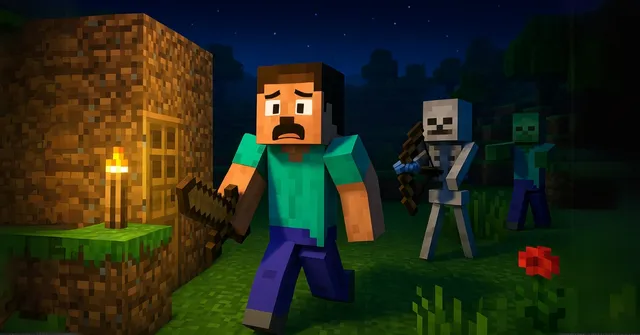
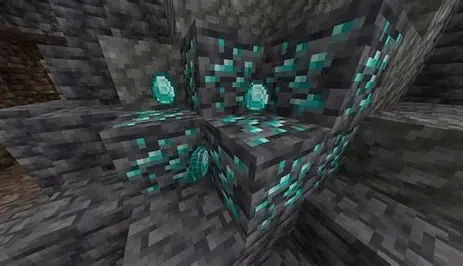
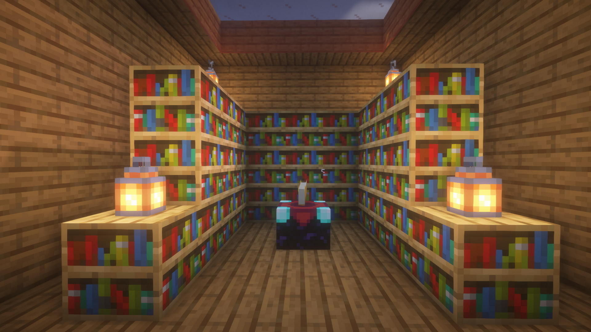

your first night
To survive your first night in Minecraft start by gathering wood and crafting basic tools then mine stone to upgrade your tools and collect food from animals if possible get wool from sheep to make a bed before it gets dark build a small shelter or dig into a hill and close it completely to stay safe at night dangerous mobs like Zombie Skeleton and Creeper will spawn so stay inside and wait until morning while cooking food or crafting items

How to get your first diamond
To get your first diamond in Minecraft start by crafting iron tools especially an iron pickaxe since diamonds can only be mined with it then go underground by exploring caves or digging down to lower levels where diamonds spawn more often mine in a straight line or branch mine to cover more area and look for blue diamond ore blocks while exploring be careful of lava and mobs like Creeper and Zombie and once you find diamond ore mine it with your iron pickaxe to collect your first diamonds safely

how to enchant your armor
To enchant your armor in Minecraft you first need an enchantment table which is crafted using obsidian diamonds and a book then place it down and surround it with bookshelves to unlock stronger enchantments next you need experience levels and lapis lazuli open the enchantment table put your armor piece in and choose an enchantment using your levels and lapis this will give your armor special abilities like protection or fire resistance you can also use an anvil to combine enchantments.
